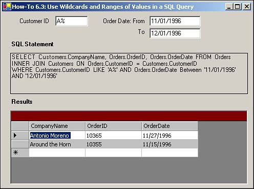

Note
The literal values have been used here, rather than the text box values that will be used in the How-To. |
I need to be able to either search for a range of values, or at least be able to use wild cards with my query. How do I do this using T-SQL?
This is one of those fairly simple but necessary How-Tos. You will learn how to use a combination of both wild cards and a range of values. Here is the T-SQL routine that you will use for this How-To:
SELECT Customers.CompanyName, Orders.OrderID, Orders.OrderDate FROM Orders INNER JOIN Customers ON Orders.CustomerID = Customers.CustomerID WHERE Customers.CustomerID LIKE 'A%' AND Orders.OrderDate BETWEEN '11/01/1996' AND '12/01/1996'
Note
The literal values have been used here, rather than the text box values that will be used in the How-To. |
Fairly similar to the wild cards of the old DOS days, wild cards in T-SQL are fairly straightforward to use. It is just a matter of knowing which one to use for which task. When using wild cards, you will use the LIKE operator, as seen in the SQL string for this How-To.
You can see where the LIKE operator is used with A%. The % is used to specify anything after the given letter. In this case, it's used for anything starting with the letter A. (This operator will, of course, have to have the OrderDate fall between the dates specified, but we'll talk about this in a moment. You can use other wild cards as well, such as the following:
% (Percent sign). You use this to specify any given group of characters. If used before a letter or group of letters, you are then specifying that you want values ending with those letters. For instance, if you specify %ing, you get skiing, flying, and so on.
_ (Underscore). You use this to specify a single character. For instance, if you type _ake, then you would get four-letters words, such as lake, bake, and sake.
[] (Square brackets) This is a range or group of characters to compare against. For example, if you type [B-D]ake, you would get bake and cake. Another way to use it, with a group of letters, would be to type [BF]ake. In this case, you would get bake and fake, but not the other letter that fall inbetween.
[^] (Caret). This is not within the given range or group. Opposite of the last entry, if you typed [^B-D]ake, you would get those words ending in ake, where the first letter doesn't fall within B-D. The same works for the group of letters as well.
When you need to look at a range of values, whether it be numbers or dates, you use the BETWEEN operator. The syntax for BETWEEN is as follows:
table.column BETWEEN startingvalue AND endingvalue
This returns all records where the given column falls between the two values, including the two values. Because the BETWEEN statement mentioned a moment ago was Orders.OrderDate BETWEEN '11/01/1996' AND '12/01/1996', then those records with the OrderDate falling between 11/1/1996 and 12/1/1996 inclusively will be displayed.
Open and run the Visual Basic .NET-Chapter 6 solution. From the main form, click on the button with the caption How-To 6.3. When the form loads, you will see a form that allows you to specify letter(s) for the company name to fill the data grid for, along with a range to specify for order dates (see Figure 6.4).
Create a Windows Form. Then place the controls listed in Table 6.3 with the following properties set, as displayed in Figure 6.4.
|
Object |
Property |
Setting |
|---|---|---|
|
Label |
Text |
Customer ID |
|
TextBox |
Name |
txtCustomerID |
|
Text |
A% |
|
|
Label |
Text |
Order Date: From |
|
Label |
Text |
To |
|
TextBox |
Name |
txtFromDate |
|
Text |
11/01/1996 |
|
|
TextBox |
Name |
txtToDate |
|
Text |
12/01/1996 |
|
|
Label |
Text |
SQL String |
|
Label |
Name |
lblSQLString |
|
Label |
Text |
Results |
|
DataGrid |
Name |
dgResults |
Add the following code in Listing 6.6 to the Load event of the form. (Double-click on the form to bring up the code.)
Private Sub frmHowTo6_3_Load(ByVal sender As System.Object,
ByVal e As System.EventArgs) Handles MyBase.Load
GenerateData()
End Sub
In the class module for the form, add the code in Listing 6.7 to create the GenerateData routine. After creating the SQL statement, this routine assigns it to the Text property of lblSQLString. Then the string is used in a data adapter that was created to fill the dtResults data table. Last, the data table is set as the data source for dgResults.
Sub GenerateData()
'-- Build the SQL String
Dim strSQL As String
strSQL &= "SELECT Customers.CompanyName, " & _
"Orders.OrderID, Orders.OrderDate "
strSQL &= "FROM Orders INNER JOIN Customers "
strSQL &= "ON Orders.CustomerID = Customers.CustomerID" & vbCrLf
strSQL &= "WHERE Customers.CustomerID LIKE '" & _
Me.txtCustomerID.Text & "' AND "
strSQL &= "Orders.OrderDate BETWEEN '" & Me.txtFromDate.Text
strSQL &= "' AND '" & Me.txtToDate.Text & "'"
'-- Store the SQL String
Me.lblSQLString.Text = strSQL
'-- Use the SQL String to build the data adapter and fill the data table.
Dim odaResults As New OleDb.OleDbDataAdapter(Me.lblSQLString.Text,
BuildCnnStr("(local)", "Northwind"))
Dim dtResults As New DataTable()
Try
odaResults.Fill(dtResults)
Catch excp As Exception
MessageBox.Show(excp.Message)
Exit Sub
End Try
'-- Assign the data table to the data grid's DataSource property
Me.dgResults.DataSource = dtResults
End Sub
Add the code in Listing 6.8 to the TextChanged events of txtCustomerID, txtFromDate, and txtToDate, respectively. These routines call GenerateDate when the values change.
Private Sub txtCustomerID_TextChanged(ByVal sender As System.Object,
ByVal e As System.EventArgs) Handles txtCustomerID.TextChanged
GenerateData()
End Sub
Private Sub txtFromDate_TextChanged(ByVal sender As System.Object,
ByVal e As System.EventArgs) Handles txtFromDate.TextChanged
GenerateData()
End Sub
Private Sub txtToDate_TextChanged(ByVal sender As System.Object,
ByVal e As System.EventArgs) Handles txtToDate.TextChanged
GenerateData()
End Sub

By placing your use of wild cards and allowing for ranges of values, you can make your applications and the querying of data more versatile than ever!